Piscinas.
Desde el revestimiento de la cuba de piscinas con pasta de vidrio o cristal transparente coloreado, hasta piscinas desbordantes, pasando por el uso de materiales hidráulicos, porcelánicos o de piedra natural.
Hemos colaborado en interesantes proyectos para revestir piscinas de viviendas, hoteles, spas y gimnasios, tanto en Barcelona como en otras poblaciones.
Ven a nuestra tienda-showroom para conocer las distintas opciones que te proponemos en marcas y modelos de revestimientos para piscinas. Así mismo, regístrate en el blog o en nuestras redes sociales para estar al día de novedades y tendencias.
Y si lo que buscas no está en exposición, lo buscamos en la Bagnoteca, nuestra biblioteca de catálogos.
Novedades 20267

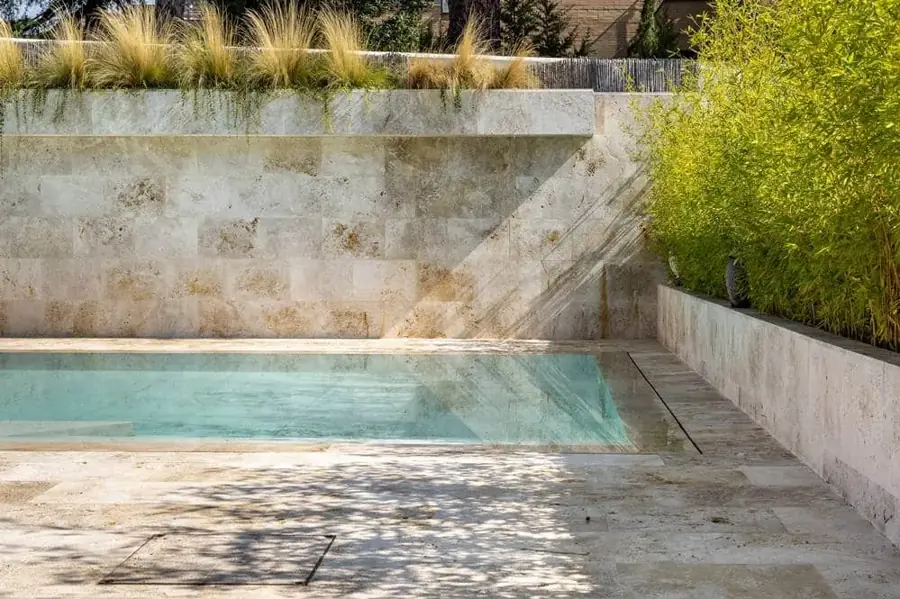
Piscinas¿Cuánto dura realmente el acabado de una piscina antes de empezar a deteriorarse?
Sol, cloro, agua constante. La mayoría de superficies acaban perdiendo color o agarre con el tiempo.
Dekton no lo hace. Su gran formato da continuidad estética al conjunto, y su resistencia extrema mantiene la superficie impecable pase lo que pase: sin arañazos, sin manchas, sin degradarse por los rayos UV ni los cambios de temperatura.
Incorpora además la tecnología antideslizante Grip+, pensada para bordes y zonas húmedas, donde el riesgo de resbalar es mayor.

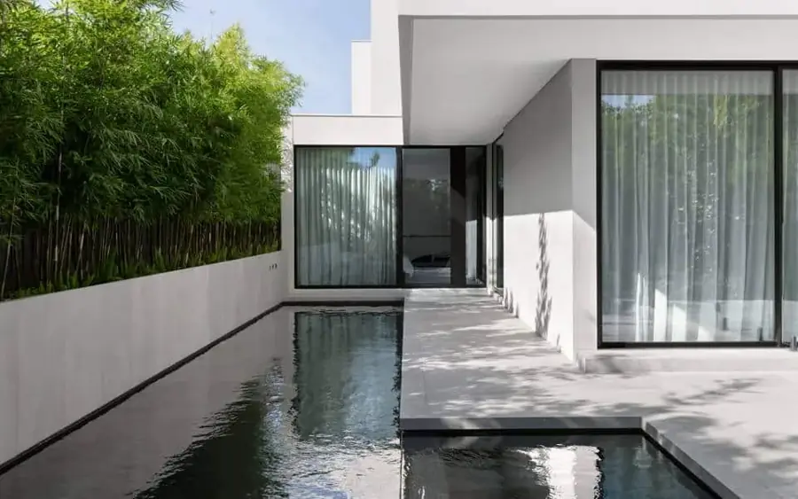
PiscinasEl mismo pavimento dentro y fuera. Sin cambios de material, sin cambios de tono
Lo hemos visto muchas veces. Un interior resuelto con mucho criterio, y en cuanto llegas a la terraza o a la piscina, cambio de material, cambio de tono, cambio de todo. El espacio se fragmenta justo donde más se disfruta.
Necesitas un pavimento que no absorba agua, que aguante la exposición continua, que no se mueva con el tiempo, y que visualmente sea exactamente lo mismo que el interior.
El nuevo gres porcelánico de Cotto d’Este es adecuado para eso. Disponible en 14MM, Kerlite y 20mm para exterior. Continuidad real entre dentro y fuera, no aproximada.

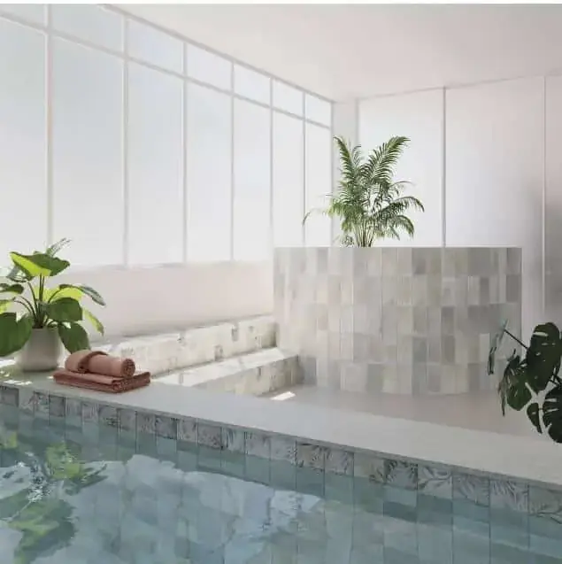
PiscinasPavimentos para piscinas colección Aqua – WOW Design
La serie Aqua de WOW Design invita a un momento de relajación y descanso inspirado en la calma que el agua nos transmite cuando nos sumergimos en ella.
Su diseño captura la serenidad de los espacios acuáticos con una gama cromática que abarca desde la neutralidad de la arena y los grises hasta los verdes más revitalizantes.
La colección se distingue por su suavidad y resistencia al deslizamiento, perfecta para zonas de piscina y zonas de confort, tanto interiores como exteriores.
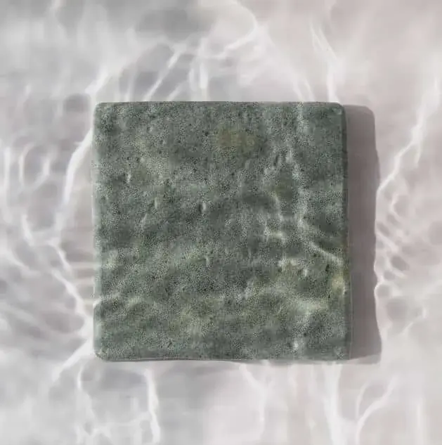
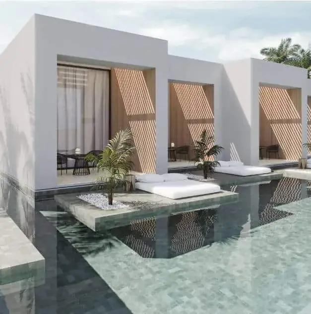
PiscinasPavimentos para piscinas Sukabumi Collection – WOW Design
Sumérgete en un oasis de tranquilidad con Sukabumi, la nueva colección de revestimientos para piscina de WOW Design. La nueva línea de la marca te invita a conectar con la naturaleza a través de sus suaves texturas y colores inspirados en la piedra que le da nombre.
Cada una de sus piezas es única, creado espacios de evasión y descanso totalmente personalizados y con el balance perfecto entre diseño y bienestar.
Perfecta para interiores y exteriores, Sukabumi está disponible en distintas tonalidades propias de zonas acuáticasofrece una superficie antideslizante en acabado mate que resalta su belleza natural.
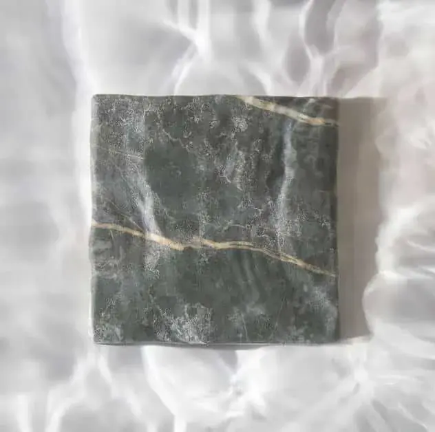
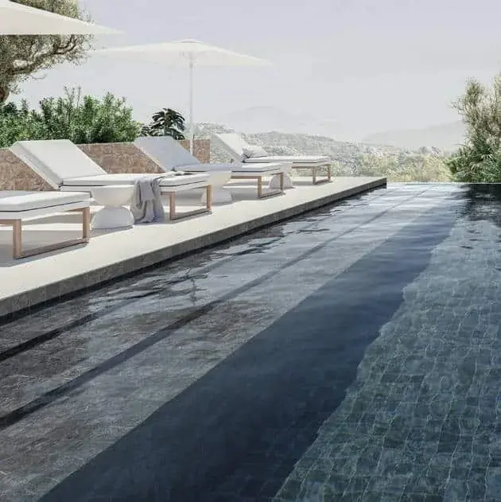
PiscinasPavimentos para piscinas Marble Collection – WOW Design
Como una puerta abierta al bienestar, así se presenta la nueva colección de pavimentos para zonas acuáticas “Marble” de WOW Design.
Diseñada para establecer esta conexión de paz y armonía entre el agua y el espacio, el mármol es el material protagonista en esta nueva línea. Una elección estética que, además, brinda elegancia y serenidad a estos rincones de disfrute personal.
La colección está disponible en tres tonalidades neutras con origen terrestre: arena, verde y grafito. Todas ellas en un acabado de esmalte mate pensado para su uso tanto en interiores como exteriores.
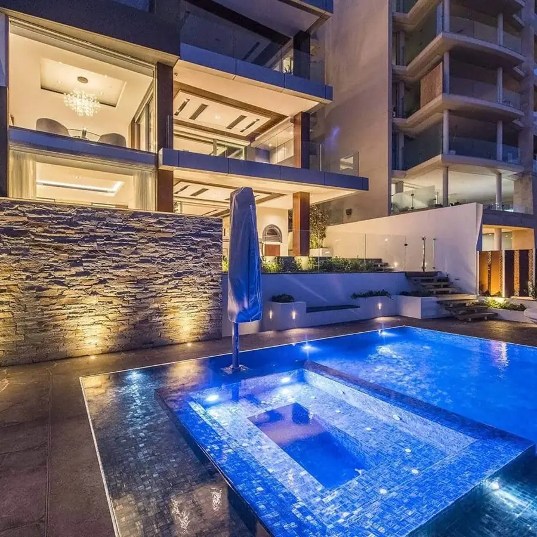
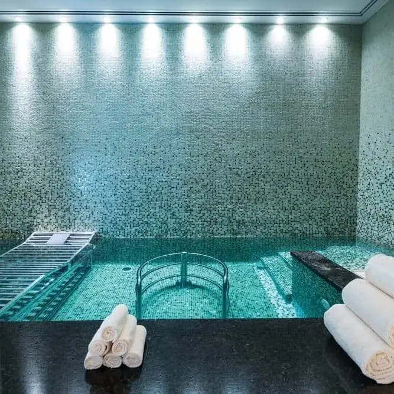
PiscinasMosaicos para piscinas Water - Trend
Trend presenta su catálogo Water, nuevas colecciones exclusivas para piscinas de ensueño con los mejores mosaicos vítreos del mercado.
Tecnología punta que te garantiza facilidad en la operativa y en su mantenimiento, a la vez que versatilidad en diseño y aplicación.
Tantas opciones como gustos: disponibles en varias formas, acabados y colores para satisfacer cualquier necesidad.
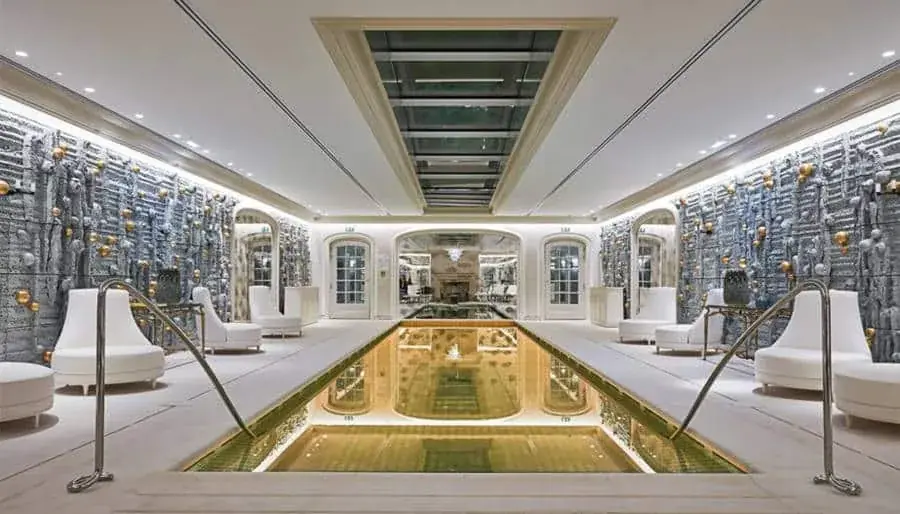
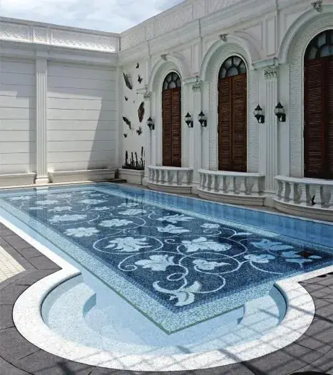
PiscinasRevestimiento mosaico para Piscinas - Sicis
La tranquilidad es un lujo que te puedes permitir. Una propuesta Sicis, de amplia gama cromática, inspirada en los más lujosos spas, donde el confort y el relax llegan a niveles insospechados.